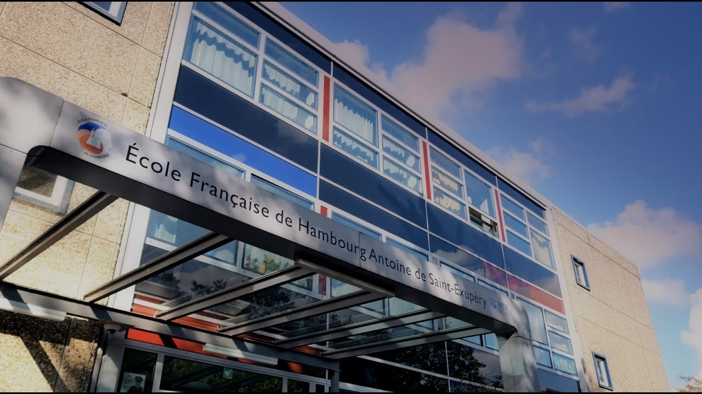
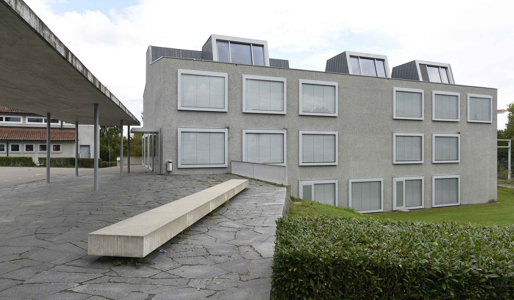
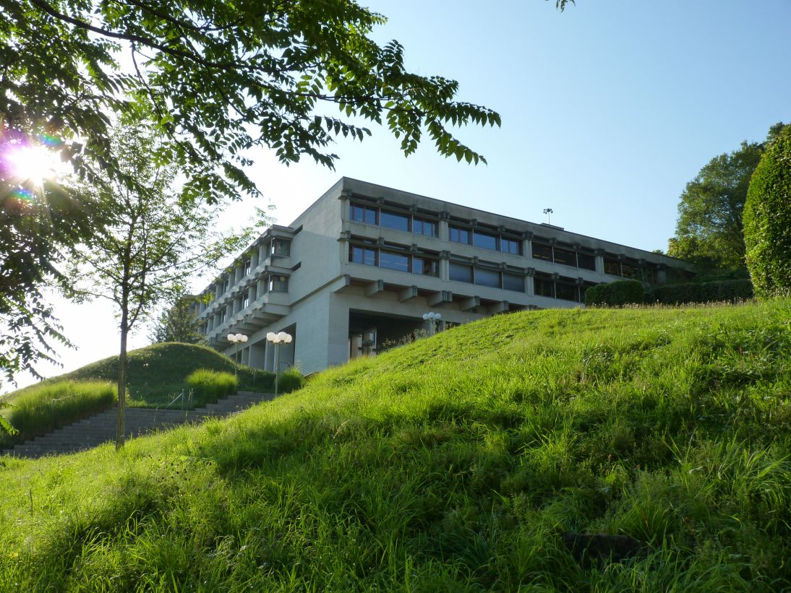
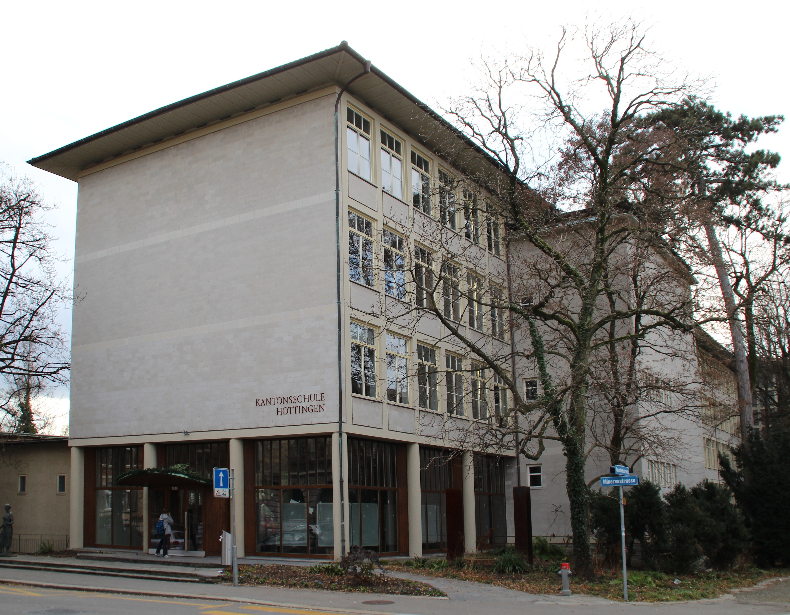
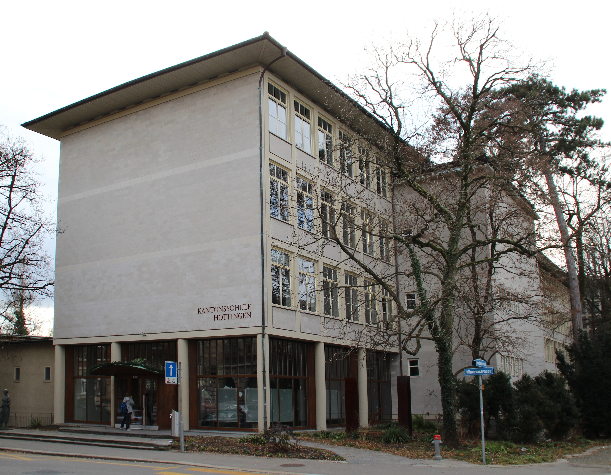

Schulischer Werdegang
- Kindergarten: Ich war in der Kita des "Lycée francais de hambourg"
- Primarklasse: Ich war von der ersten bis zur vierten Klasse im "Lycée francais de hambourg" und von der fünften bis zur sechsten war ich im "Schulhaus Mattenhof"
- Sekundarschule: Meine gesamte Sekundarschulzeit habe ich im "Schulhaus Stettbach verbracht"
- Mittelschule: Im "Schulhaus Bülrain" habe ich die Probezeit nicht bestanden, danach bin ich in die "Kantonschule Hottingen" gewechselt."
 

 
